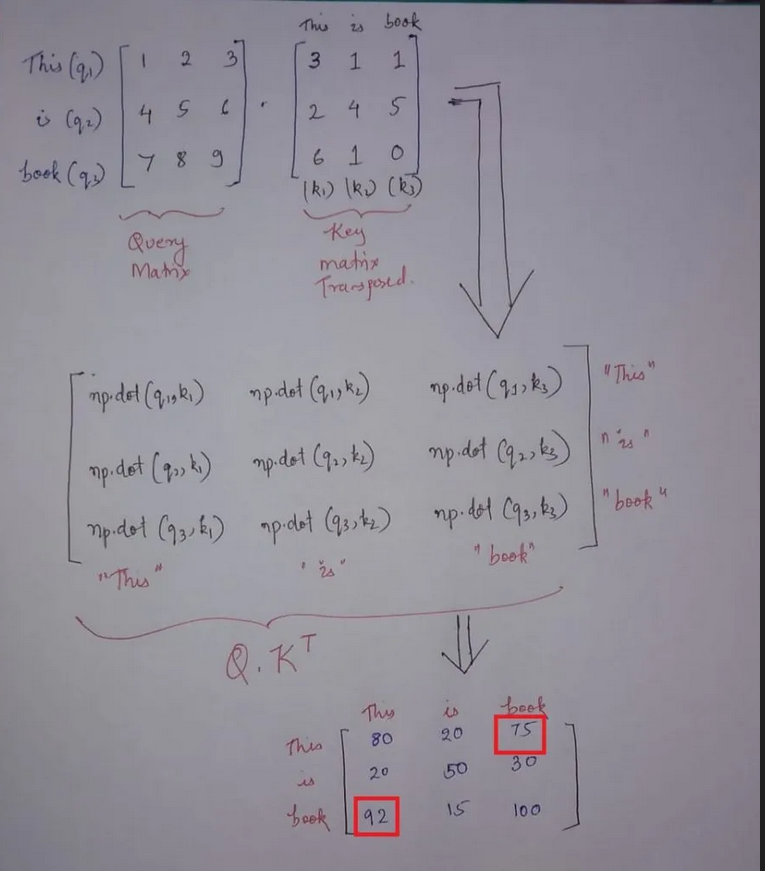

Attention is All You Need
(Transformers)
Mastering the Power of Attention: Understanding the Architecture Behind this
Critical Neural Network Mechanism
We are in the peak of artificial intelligence and everyone talks about new AI tools in these days such as ChatGPT, Midjourney etc. If you are curious about the main technology behind those AI tools, it is TRANSFORMER.
What is a transformer?
In simple words, transformer is a neural network architecture that processes inputs sequentially, in a self-attention manner. Transformer was introduced in the paper Attention is All You Need by Ashish Vaswani et al. in 2017. The major advantage of transformer over other architectures is that it can process a whole sentence at once. This is due to the fact that transformer employs self-attention mechanism.
The transformer is the first transduction model which depends entirely on the self-attention mechanism mechanism to compute its representation without using RNNs or convolution.

The architecture for the transformer as above mentioned image. Let's think we have English to Spanish machine translation to training the transformer.
Source = "quiero esto"
Target = "i want this"
At first input batch sequence send through the input embedding and get embedding values for each word in the batch sequence. That stage we consider about the batch size, sequence length and the embedding size. In the given example we can send "quiero esto". So for that example we have those values for the above mentioned parameters.
Sequence length= 2, Batch size=1, Embedding size(d_model)= 512
We get (Batch size, Sequence length, Embedding size) tensor as the output of the input embedding.
After that we send it through positional encoding. This model not contains recurrence and convolution therefore we need some method to give the position of the token in the sequence. For that purpose, we need to use positional encoding. We get (Batch size,Sequence length, Embedding size) tensor as the output of the positional encoding.
After that we send them through encoder. Encoder has two main layers: multi-head attention, feed forward. First send through multi-head attention and the inside of it as below mentioned image.

We send input embedding as key, value and query separately. The number of parallel attention heads, dimension of keys (queries) and dimension of values are h, d_k and d_v respectively. According to the paper,
h=8
d_k=d_v= d_model/h=64
At the beginning we have (Batch size, Sequence length, Embedding size) matrix and after send them through linear layer and multiple with weights of keys,queries and values separately, we get (Batch size, Sequence length, Number of attention heads, Dimension of keys(queries or values)). We swap number of attention heads with sequence length. Now the tensor is (Batch size, Number of attention heads, Sequence length, Dimension of keys(queries or values)).
Now tensors are send through scaled dot product attention to calculate attention score. The most used attention functions are additive attention and dot-product (multiplicative) attention. In here use dot-product attention because it is much faster and needs less amount of memory to execute the algorithm.
Above mentioned equation can be used to calculate the attention score. First query matrix ((Batch size, Number of attention heads, Sequence length, Dimension of queries) size matrix)and transpose of key matrix ((Batch size, Number of attention heads, Dimension of queries, Sequence length) size matrix) are multiplied and (Batch size, Number of attention heads, Dimension of queries, Dimension of keys) size matrix is gotten as the output. So far calculated attention score is divided by square root of embedding dimension and apply softmax along the last axis (along the 'dimension of keys' axis). Finally multiply it by value matrix and (Batch size, Number of attention heads,Sequence length, Dimension of values) size matrix is sent as the output. After that transpose that matrix into (Batch size, Sequence length, Number of attention heads, Dimension of values) and reshape it as (Batch size, Sequence length, Number of attention heads* Dimension of values).
If check that attention mechanism using example matrices for only key and query matrices as shown in below figure, can be understood how it works.
After that those output send through fully connected feed-forward network and for that ReLU activation function is used. At that stage (Batch size, Sequence length, Embedding size) is the output matrix size.
Now let's take a look at decoder and it has three main layers: Masked multi-head attention, Multi-head attention and Feed-forward. At the very beginning, inputs for the decoder send as encoder input such as embedding of target values send after send them through output embedding and positional encoding.
The process of masked multi-head attention is same as the multi-head attention process that described in above. But there is a small change in that one. After multiply query and transpose of key matrices, mask is added with them. After that the other process is same as above mentioned process and with the same sizes of the matrices.
The second layer is the multi-head attention. In here output of encoder send as key and value matrices with the output of masked multi-head attention as the query matrix. Send the output through normalization layer with the query matrix as the residual connection. Finally send them through fully connected feed-forward network and send through linear and softmax layer to calculate the final probability value. 6 encoders and 6 decoders are used in original paper.
The code implemenation is in here:Attention is all you need